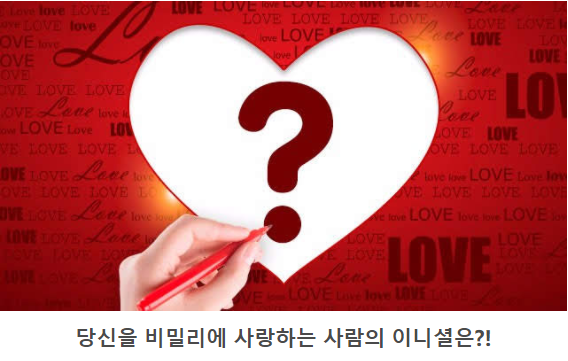

결페이지 값입니다
7~11인사람
당신은 깔끔한 연애를 좋아하는 타입인것 같아요
인간관계에서 있어서 귀찮은 것은 싫어하고 시원시원하다고 말 할 수 도 있습니다
그래서 뭔가 문제가 생겼을때 질질 끄는일은 별로 좋아하지 않아요
그래서 뭔가 문제가 생겼을 때 질질 끄는 일을 별로 좋아하지 않아요 당신은 좋고 시름이 분명하기 때문에 친해지고 싶은 사람 그렇지 않은 사람이 확실해요 착한 성격을 가지고 있기 때문에 싫어하는 사람에게 심술부리지 않지만 좋아하는 사람에게도 자신의 마음을 제대로 전하고 있지 않는 것 같아요
당신의 마음을 조금씩 전해보낸 것이 어떨까요?
당신은 남녀 불문 하고 누구에게나 필요한 존재 이기 때문에 용기를 가지고 당신의 마음을 전해 보세요
그리고 당신을 남몰래 좋아하고 있는 사람은 성이나 이름에 IHKZOP가 있는 사람입니다
12~16인사람
당신은 좋아하는 사람을 위해서라면 모든지 해주는 헌신하는 스타일입니다 좋아하는 사람이나 애인에게 애정이 깊고 자신 보다 상대방을 먼저 챙기는 사람 입니다 주는 것에 기쁨을 느끼며 혼자 누리는 것을 싫어합니다 그래도 가끔은 스스로를 챙기며 신경 쓸 때도 있습니다 사귈 상대를 고를 때는 조금 신중에 지는 것이 좋은 것 같아요 당신이 상대방에게 헌신 한다는 것을 알고 그것을 노리고 당신에게 접근 하는 사람도 있을 수 있어요 당신은 그런 사람일지라도 좋아하면 다 받아 주는 성격이라서 그 사람이 좋아 지기 전에 어떤 사람인지 확인 하는 것이중요해요
그리고 당신을 남몰래 좋아하고 있는 사람은 성이나 이름에 AJDGOLM가 있는 사람입니다
17~22점인 사람
당신은 연예 있어서 안전과 편안함을 바라는 사람 입니다 끈적한 관계를 그다지 좋아하지 않으며 그 웃는 얼굴이 끊이지 않는 친구 같은 즐거운 관계를 좋아합니다 그렇다고 어리광을 부르고 싶지 않다는 것은 아니고 가끔은 어리광도 부리고 시 반은 귀여운 면도 있습니다 당신이 신뢰하는 사람 에게만 보여줄 수 있는 당신 본연의 모습을 보여줄 수 있는 사람을 만난다면 당신의 사랑은 잘 될 것입니다 하지만 당신이 진짜 자신에 50%도 보여 주지 못한다면 당신에게는 고통스러운 사랑에 될 것입니다 함께 있으면 안정이 되고 마음이 맞는 사람을 찾으면 좋을 것 같아요
그리고 당신을 남몰래 좋아하고 있는 사람은 성이나 이름에 UTSBQR가 있는 사람입니다
23~28점인 사람
당신은 매우 순수한 마음을 가진 사람입니다 처음 만난 사람에게 ‘뭔가 옛날 부터 쭉 알고 지낸 사람인 것 같아’라는 말을 듣는 묘한 매력을 가진 사람은 그만큼 상대방에게 편안함을 줄 수 있다는 것입니다 그래서 연애를 시작하는 것이 상당히 느리게 진행 되지만 이 하나 하나 연애의 모든 것을 소중하게 하고 싶다는 당신의 마음속 표현인 것입니다 그래서 당신은 결혼을 해서도 행복한 가정을 꾸리 수 있는 사람입니다 그리고 당신을 난 몰래 좋아하고 있는 사람은 성이나 이름에 CYNVEF 가 있는 사람입니다